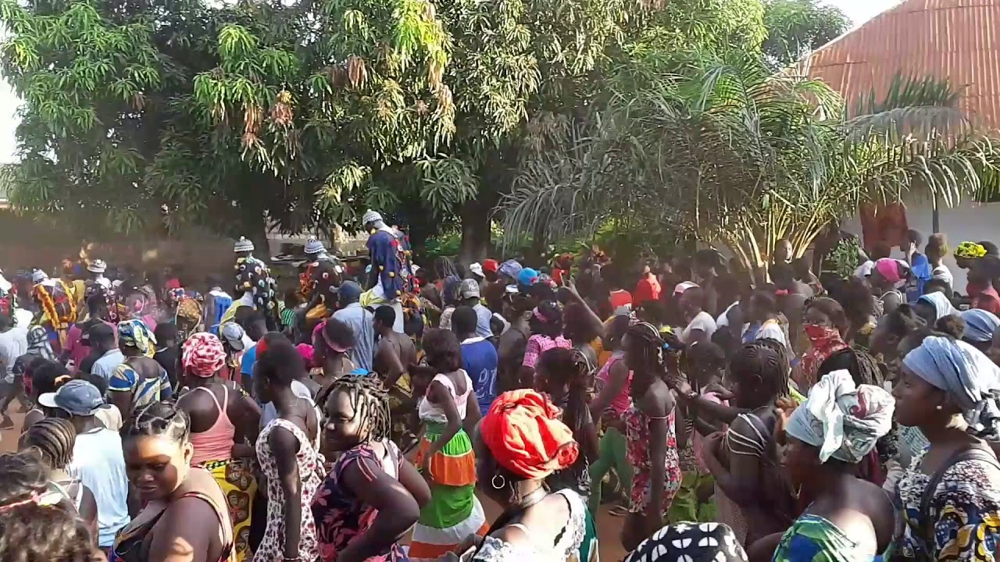

Turismo na Guiné-Bissau
Descubra a beleza natural, a cultura vibrante e as tradições únicas de um dos países mais fascinantes da África Ocidental. O turismo na Guiné-Bissau ainda é incipiente, mas tem grande potencial, especialmente para ecoturismo, cultura e expriências autênticas fora das rotas turísticas tradicionais.

Atrações Naturais
Praias, ilhas e biodiversidade incríveis.

Cultura e Tradições
Dança, música e festas populares.

Cultura Famosa Guineense Djembe
Djembe Guineenses denominamos (Djambadons) posso dizer que é um tipo de cultura que nós Guineenses amamos muito, porque todo o mundo vem atrás de cancurans e tambor.